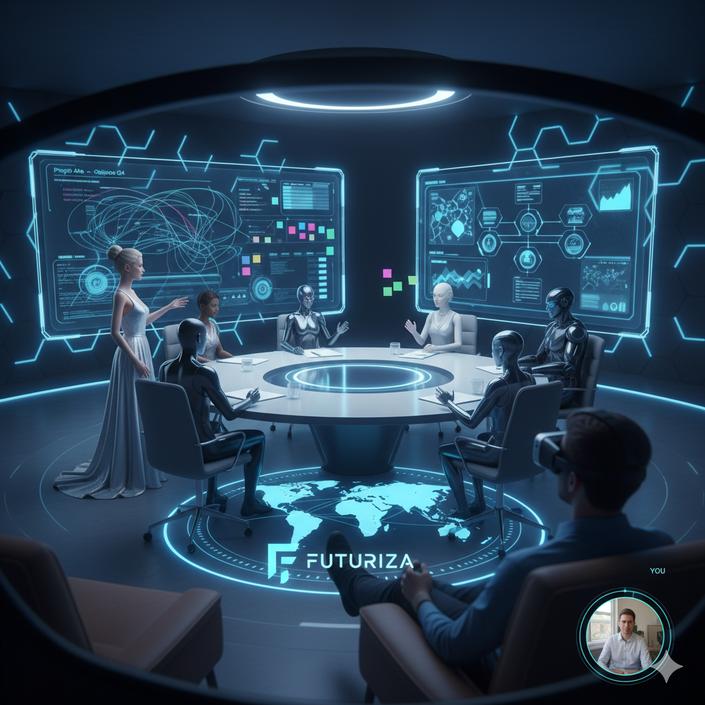
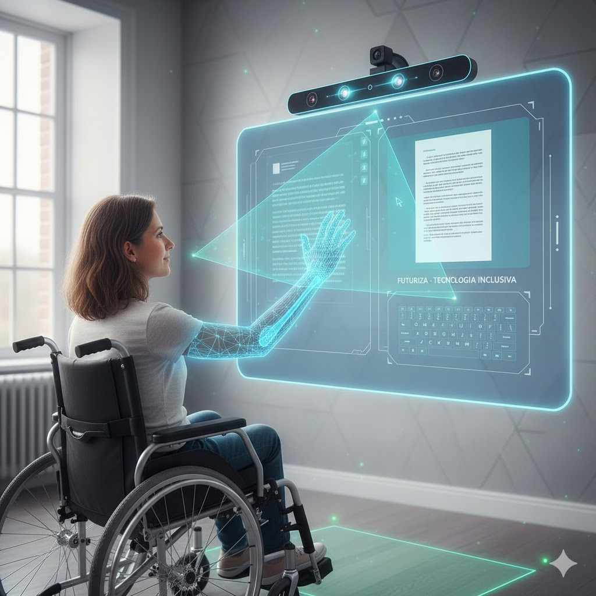
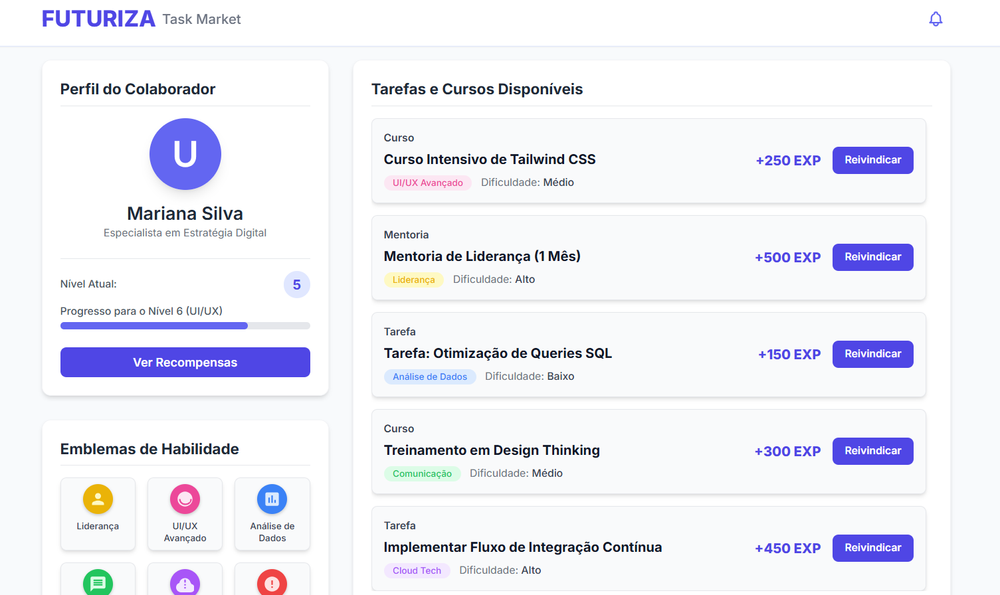
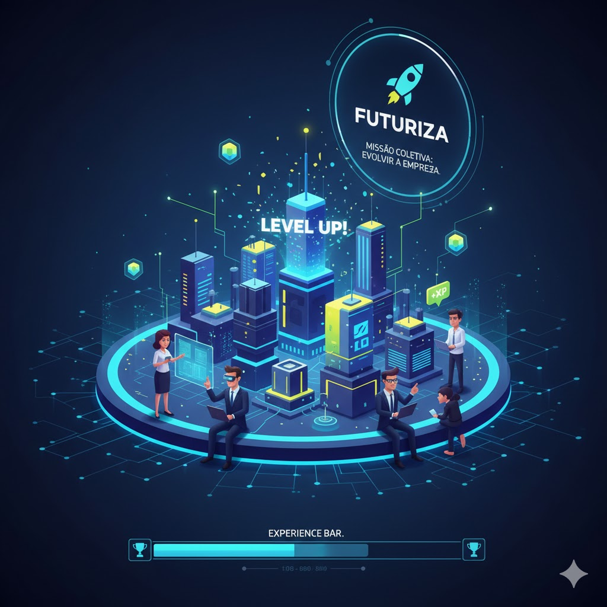

Na prática:
Sabemos dos desafios de se imaginar no futuro, de como será, nós abraçamos
este desafio e temos a solução.
Desenvolvemos a sala virtual um ambiente 100% customizável, para atender todas as demandas que sua empresa necessita, pensando em minimizar o problema de transporte,
que de acordo com uma pesquisa interna é o problema de 75% das pessoas entrevistadas, criamos então uma forma de contornar utilizando a sala virtual, onde as reuniões poderão acontecer de formamais controlada mas sem perder o conforto de casa,
gerando mais conforto para o trabalhador, gerando mais controle para a empresa, e junto colaborando com a diminuição do trânsito.
E não parando por aí outro de nossos serviços que combina com asala virtual que é a tela interativa, com sensor de profundidade o usuário poderá movimentar e interagir usando os movimentosque possui maior destreza, e não ficando restrito a isso, pode ser personalizada para pessoas com autismo que precisam de certosestímulos visuais.
Outro foco da nossa empresa é maximizar a produtividade e combinar talentos da equipe e para isso temos o task market, uma plataformapara usuários se cadastrarem ou para funcionários se qualificarem nos cursos oferecidos,
à partir do avanço na plataforma ele vai ganhandoemblemas de skill, que será usado pela empresa na hora de contratar ou montar sua equipe ideal. Um outro diferencial visando aumentar a colaboração da equipe e a implementação da gamificação no ambiente de trabalho, a ideia é simples, um jogo cujo objetivo é único, evoluir a empresa, e todos precisarão colaborar, não de forma individual mas em equipe para não gerar o efeito oposto da coletividade, podendo ficar a critério da empresa estipular metas a serem batidas!



